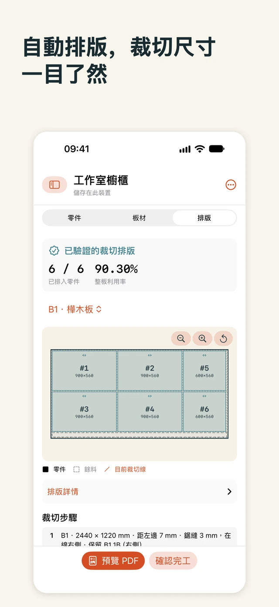
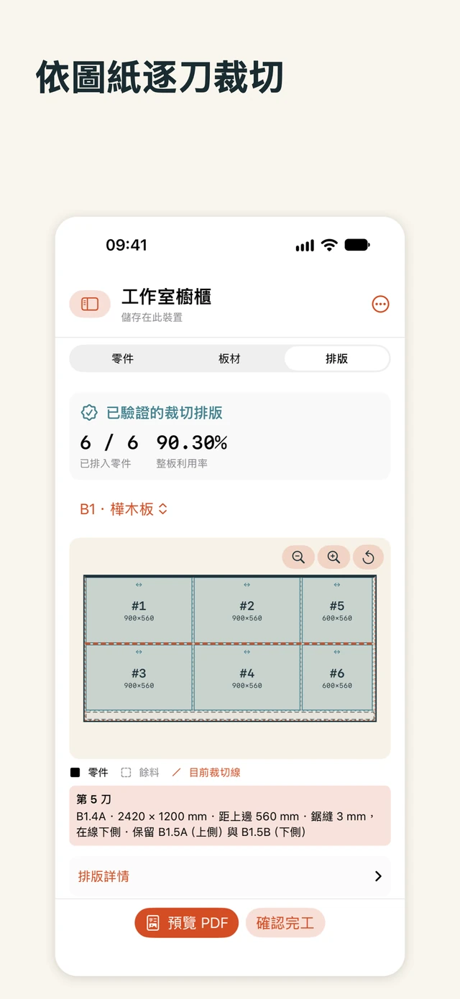
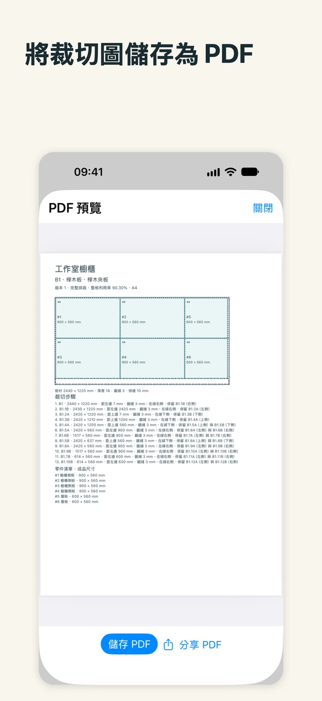
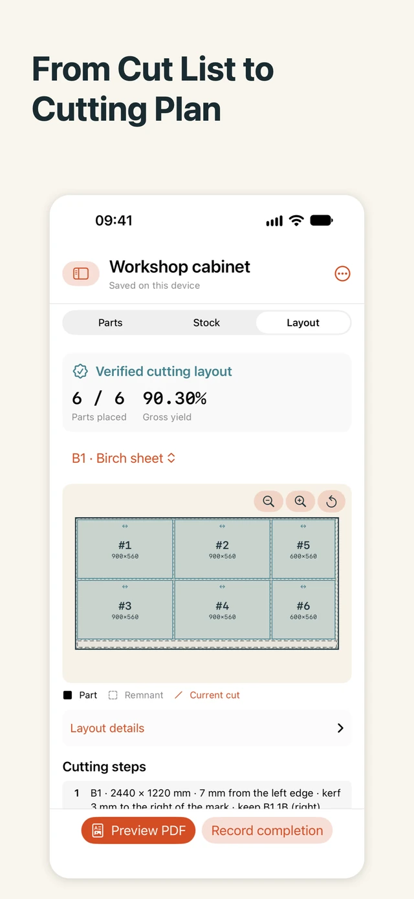
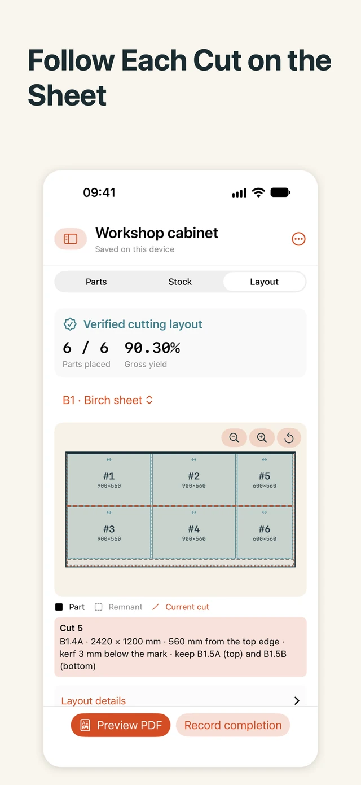
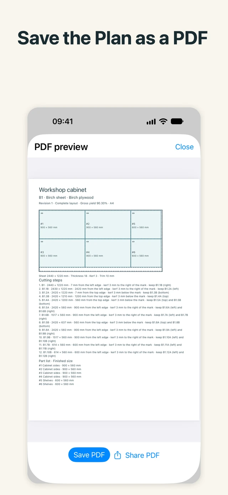

在 App Store 檢視 · View on the App Store
貼上零件清單或匯入 CSV，設定鋸縫與木紋方向。確認每張板的零件配置後，逐刀看鋸切順序，將圖紙匯出為 PDF 帶到工作現場。可用餘料也能留下，供下一個專案使用。
適用於 iPhone、iPad 和 Mac。一次性付費，排版和專案儲存在裝置上，無需登入即可離線使用。



Paste a parts list or import a CSV. Set the blade kerf and grain direction, check the layout on each sheet, then follow the numbered cut sequence. Export a PDF for the workshop and keep track of offcuts you can use on the next project.
One-time purchase for iPhone, iPad and Mac. Projects and cutting calculations stay on the device, so you can work offline without an account.



如有使用問題或意見，請寄信至 w675207752@163.com。
For help or feedback, email w675207752@163.com.
2.0.1 的專案資料儲存在本機。你可在 App 匯出專案或完整工作區備份，並將檔案儲存至你選擇的位置。
In 2.0.1, project data is saved locally. Export an individual project or a library backup and save the file to a location you choose.